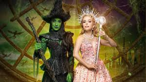
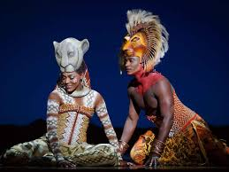
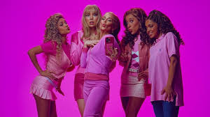

Notícias de Musicais
Wicked Brasil
O Rei Leão
Meninas Malvadas
O consagrado musical da Broadway, Wicked A História Não Contada das Bruxas de Oz, está em cartaz no Brasil em uma nova e grandiosa produção no Teatro Renault, em São Paulo. A temporada teve início em 20 de março de 2025 e, devido ao sucesso de público, foi estendida, com sessões programadas até pelo menos setembro de 2025. A montagem brasileira traz de volta ao palco duas estrelas já conhecidas do público: Myra Ruiz, no papel de Elphaba, e Fabi Bang, como Glinda. Com produção caprichada, efeitos especiais de alto nível e direção de grandes nomes do teatro musical, a peça segue encantando fãs antigos e novos espectadores.
O musical O Rei Leão (“The Lion King”) é uma grandiosa produção da Disney Theatrical Productions, baseada no filme de 1994. A versão brasileira mistura a montagem original com adaptações locais: músicas adaptadas para o português por Gilberto Gil, tradução de texto, e elenco com artistas brasileiros. Teve sua temporada iniciada em julho de 2024, no Teatro Renault, em São Paulo.
A peça é baseada no filme Mean Girls (2004). A história gira em torno de Cady Heron, uma jovem que viveu grande parte da vida na África com seus pais e vai, pela primeira vez, estudar em uma escola de ensino médio nos Estados Unidos. Lá, ela conhece o grupo das garotas mais populares, liderado por Regina George, e se vê envolvida numa teia de dinâmica social, intrigas e poder. A temporada de shows começa em 13/03/2025, no Teatro Santander.